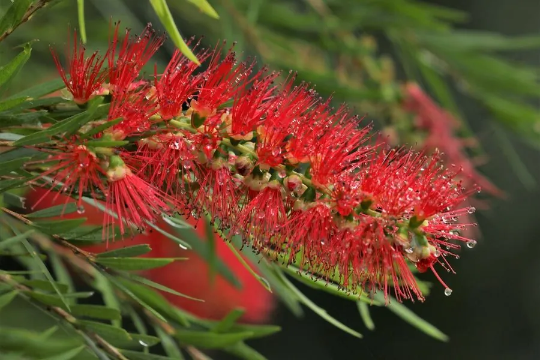

灌木与花木 · 植物界
串钱柳 Callistemon viminalis

桃金娘科红千层属常绿小乔木，枝条柔软下垂，红色穗状花序形似瓶刷，盛花时如串串红钱垂挂，十分醒目。
- 分类
- 门被子植物门纲木兰纲目桃金娘目科桃金娘科属红千层属
- 栖息环境
- 热带亚热带河岸与庭院，喜高温湿润、阳光充足
- 地理分布
- 原产澳大利亚昆士兰州；中国广东、广西、福建、海南、云南栽培
- 保护级别
- 暂无评估；中国未列入国家重点保护野生植物名录
物种志
串钱柳为桃金娘科红千层属常绿小乔木或灌木，高可达五至十米，树皮灰褐色、纵裂，枝条细长柔软、下垂如柳。叶片互生，革质，披针形，全缘，表面深绿。花组成顶生的穗状花序，雄蕊多数、鲜红色，长伸于花外，形似瓶刷，花期五至八月；蒴果木质，紧贴花序轴排列成串，形似一串铜钱，果期秋冬季。
串钱柳原产澳大利亚昆士兰州，中国广东、广西、福建、海南、云南等地有栽培。它喜高温湿润和充足阳光，不耐寒，适宜疏松肥沃、排水良好的土壤。枝条下垂、花色鲜红，是优良的观花乔木，常植于水边、庭院和道路两旁；因蒴果紧贴枝条排成串，形如串钱，故得名串钱柳。花富含花蜜，是蜜蜂和鸟类的重要蜜源。
形态与习性
- 株高5–10 m，枝条下垂
- 花期5–8 月，穗状花序鲜红
- 果期秋冬季，蒴果串状
- 光照极喜光，全日照开花盛
- 水分喜湿润，耐短期积水
- 土壤疏松肥沃的壤土
- 主要用途水边观花树、行道树
趣味知识
- 串钱柳的雄蕊细长鲜红，聚成穗状，形状像洗瓶子的毛刷，故又名瓶刷树。
- 它的蒴果紧贴枝条排成一串，老果经久不落，像一串串铜钱。
- 串钱柳原产澳大利亚，花期时吸蜜的鸟类和蜜蜂络绎不绝。